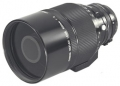

器材库 > 35mm画幅MF定焦镜头 > New FD Reflex 500/8

详细规格
镜头类型
折反镜头
发布日期
1980-03
厂家推荐价格
82,000.00 （日元）
焦距
500mm
最大光圈
f/8
镜头结构
6片/3组
最近对焦距离
400cm
最大放大倍率
0.14
滤镜口径
34mm
镜头卡口
Canon FD/FL/NEW FD
防抖
否
颜色
黑色
尺寸
90×146mm
重量
705g
黑暗使者2014-03-19 22:545 分
操作性 5.00耐用性 5.00性价比 5.00解像力 5.00色彩还原 5.00机械结构 5.00
产品图 / 样片
佳能 New FD Reflex 500/8
评测 / 相关文章
该产品暂无存档的评测文章